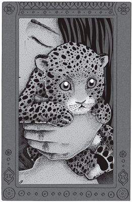
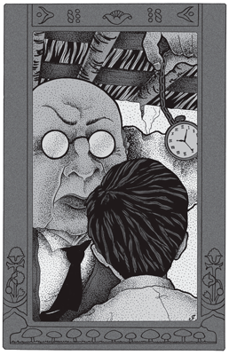
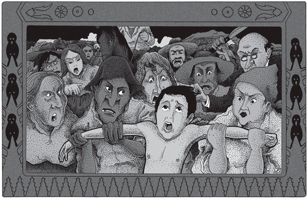
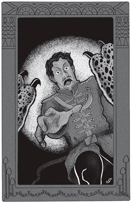
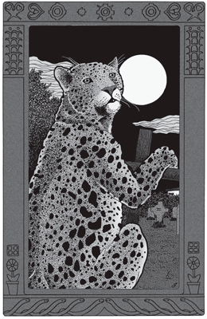

Aquí se cuenta la historia de un tigre que se crió y educó entre los hombres, y que se llamaba Juan Darién. Asistió cuatro años a la escuela vestido de pantalón y camisa, y dio sus lecciones corrientemente, aunque era un tigre de las selvas; pero esto se debe a que su figura era de hombre, conforme se narra en las siguientes líneas:
Una vez, a principios de otoño, la viruela visitó un pueblo de un país lejano y mató a muchas personas. Los hermanos perdieron a sus hermanitas, y las criaturas que comenzaban a caminar quedaron sin padre ni madre. Las madres perdieron a su vez a sus hijos, y una pobre mujer joven y viuda llevó ella misma a enterrar a su hijito, lo único que tenía en este mundo. Cuando volvió a su casa, se quedó sentada pensando en su chiquito. Y murmuraba:
–Dios debía haber tenido más compasión de mí, y me ha llevado a mi hijo. En el cielo podrá haber ángeles, pero mi hijo no los conoce. Y a quien él conoce bien es a mí, ¡pobre hijo mío!
Y miraba a lo lejos, pues estaba sentada en el fondo de su casa, frente a un portoncito por donde se veía la selva.
Ahora bien; en la selva había muchos animales feroces que rugían al caer la noche y al amanecer. Y la pobre mujer, que continuaba sentada, alcanzó a ver en la oscuridad una cosa chiquita y vacilante que entraba por la puerta, como un gatito que apenas tuviera fuerzas para caminar. La mujer se agachó y levantó en las manos un tigrecito de pocos días, pues tenía aún los ojos cerrados. Y cuando el mísero cachorro sintió el contacto de las manos, runruneó de contento, porque ya no estaba solo. La madre tuvo largo rato suspendido en el aire aquel pequeño enemigo de los hombres, aquella fiera indefensa que tan fácil le hubiera sido exterminar. Pero quedó pensativa ante el desvalido cachorro que venía quién sabe de dónde, y cuya madre con seguridad había muerto. Sin pensar bien en lo que hacía, llevó el cachorrito a su seno, y lo rodeó con sus grandes manos. Y el tigrecito, al sentir el calor del pecho, buscó postura cómoda, runruneó tranquilo y se durmió con la garganta adherida al seno maternal.
 |
Levantó en las manos un tigrecito de pocos días. |
La mujer, pensativa siempre, entró en la casa. Y en el resto de la noche, al oír los gemidos de hambre del cachorrito, y al ver cómo buscaba su seno con los ojos cerrados, sintió en su corazón herido que ante la suprema ley del Universo, una vida equivale a otra vida…
Y dio de mamar al tigrecito.
El cachorro estaba salvado, y la madre había hallado un inmenso consuelo. Tan grande su consuelo, que vio con terror el momento en que aquél le sería arrebatado, porque si se llegaba a saber en el pueblo que ella amamantaba a un ser salvaje, matarían con seguridad a la pequeña fiera. ¿Qué hacer? El cachorro, suave y cariñoso–pues jugaba con ella sobre su pecho–, era ahora su propio hijo.
En estas circunstancias, un hombre que una noche de lluvia pasaba corriendo ante la casa de la mujer oyó un gemido áspero –el ronco gemido de las fieras que, aun recién nacidas, sobresaltan al ser humano–. El hombre se detuvo bruscamente, y mientras buscaba a tientas el revólver, golpeó a la puerta. La madre, que había oído los pasos, corrió loca de angustia a ocultar al tigrecito en el jardín. Pero su buena suerte quiso que al abrir la puerta del fondo se hallara ante una mansa, vieja y sabia serpiente que le cerraba el paso. La desgraciada madre iba a gritar de terror, cuando la serpiente habló así:
–Nada temas, mujer –le dijo–. Tu corazón de madre te ha permitido salvar una vida del Universo, donde todas las vidas tienen el mismo valor. Pero los hombres no te comprenderán, y querrán matar a tu nuevo hijo. Nada temas, ve tranquila. Desde este momento tu hijo tiene forma humana; nunca lo reconocerán. Forma su corazón, enséñale a ser bueno como tú, y él no sabrá jamás que no es hombre. A menos… a menos que una madre de entre los hombres lo acuse; a menos que una madre no le exija que devuelva con su sangre lo que tú has dado por él, tu hijo será siempre digno de ti. Ve tranquila, madre, y apresúrate, que el hombre va a echar la puerta abajo.
Y la madre creyó a la serpiente, porque en todas las religiones de los hombres la serpiente conoce el misterio de las vidas que pueblan los mundos. Fue, pues, corriendo a abrir la puerta, y el hombre, furioso, entró con el revólver en la mano, y buscó por todas partes sin hallar nada. Cuando salió, la mujer abrió, temblando, el rebozo bajo el cual ocultaba al tigrecito sobre su seno y en su lugar vio a un niño que dormía tranquilo. Traspasada de dicha, lloró largo rato en silencio sobre su salvaje hijo hecho hombre, lágrimas de gratitud que doce años más tarde ese mismo hijo debía pagar con sangre sobre su tumba.
Pasó el tiempo. El nuevo niño necesitaba un nombre: se le puso Juan Darién. Necesitaba alimentos, ropa, calzado: se lo dotó de todo, para lo cual la madre trabajaba día y noche. Ella era aún muy joven, y podría haberse vuelto a casar, si hubiera querido; pero le bastaba el amor entrañable de su hijo, amor que ella devolvía con todo su corazón.
Juan Darién era, efectivamente, digno de ser querido: noble, bueno y generoso como nadie. Por su madre, en particular, tenía una veneración profunda. No mentía jamás. ¿Acaso por ser un ser salvaje en el fondo de su naturaleza? Es posible; pues no se sabe aún qué influencia puede tener en un animal recién nacido la pureza de un alma bebida con la leche en el seno de una santa mujer.
Tal era Juan Darién. E iba a la escuela con los chicos de su edad, los que se burlaban a menudo de él, a causa de su pelo áspero y su timidez. Juan Darién no era muy inteligente; pero compensaba esto con su gran amor al estudio.
Así las cosas, cuando la criatura iba a cumplir diez años, su madre murió. Juan Darién sufrió lo que no es decible, hasta que el tiempo apaciguó su pena. Pero fue en adelante un muchacho triste, que sólo deseaba instruirse.
Algo debemos confesar ahora: a Juan Darién no se lo amaba en el pueblo. Las gentes de los pueblos encerrados en la selva no gustan de los muchachos demasiado generosos y que estudian con toda el alma. Era, además, el primer alumno de la escuela. Y este conjunto precipitó el desenlace con un acontecimiento que dio razón a la profecía de la serpiente.
Aprontábase el pueblo a celebrar una gran fiesta, y de la ciudad distante habían mandado fuegos artificiales. En la escuela se dio un repaso general a los chicos, pues un inspector debía venir a observarlas clases. Cuando el inspector llegó, el maestro hizo dar la lección, el primero de todos, a Juan Darién. Juan Darién era el alumno más aventajado; pero con la emoción del caso, tartamudeó y la lengua se le trabó con un sonido extraño.
El inspector observó al alumno un largo rato, y habló enseguida en voz baja con el maestro.
–¿Quién es ese muchacho? –le preguntó–. ¿De dónde ha salido?
–Se llama Juan Darién –respondió el maestro– y lo crió una mujer que ya ha muerto; pero nadie sabe de dónde ha venido.
–Es extraño, muy extraño… –murmuró el inspector, observando el pelo áspero y el reflejo verdoso que tenían los ojos de Juan Darién cuando estaba en la sombra.
El inspector sabía que en el mundo hay cosas mucho más extrañas que las que nadie puede inventar, y sabía al mismo tiempo que con preguntar a Juan Darién nunca podría averiguar si el alumno había sido antes lo que él temía: esto es, un animal salvaje. Pero así como hay hombres que en estados especiales recuerdan cosas que les han pasado a sus abuelos, así era también posible que, bajo una sugestión hipnótica, Juan Darién recordara su vida de bestia salvaje. Y los chicos que lean esto y no sepan de qué se habla, pueden preguntarlo a las personas grandes.
Por lo cual el inspector subió a la tarima y habló así:
–Bien, niño. Deseo ahora que uno de ustedes nos describa la selva. Ustedes se han criado casi en ella y la conocen bien. ¿Cómo es la selva? ¿Qué pasa en ella? Esto es lo que quiero saber. Vamos a ver, tú –añadió dirigiéndose a un alumno cualquiera–. Sube a la tarima y cuéntanos lo que hayas visto.
 |
Sube a la tarima y cuéntanos lo que hayas visto. |
El chico subió y, aunque estaba asustado, habló un rato. Dijo que en el bosque hay árboles gigantes, enredaderas y florecillas. Cuando concluyó, pasó otro chico a la tarima, y después otro. Y aunque todos conocían bien la selva, todos respondieron lo mismo, porque los chicos y muchos hombres no cuentan lo que ven sino lo que han leído sobre lo mismo que acaban de ver. Y al fin el inspector dijo:
–Ahora le toca al alumno Juan Darién.
Juan Darién subió a la tarima, se sentó y dijo más o menos lo mismo que los otros. Pero el inspector, poniéndole la mano sobre el hombro, exclamó:
–No, no. Quiero que tú recuerdes bien lo que has visto. Ahora cierra los ojos.
Juan Darién cerró los ojos.
–Bien –prosiguió el inspector–. Dime lo que ves en la selva.
Juan Darién, siempre con los ojos cerrados, demoró un instante en contestar.
–No veo nada –dijo al fin.
–Pronto vas a ver. Figurémonos que son las tres de la mañana, poco antes del amanecer. Hemos concluido de comer, por ejemplo… Estamos en la selva, en la oscuridad… Delante de nosotros hay un arroyo… ¿Qué ves?
Juan Darién pasó otro momento en silencio. Y en la clase y en el bosque próximo había también un gran silencio. De pronto Juan Darién se estremeció, y con voz lenta, como si soñara, dijo:
–Veo las piedras que pasan y las ramas que se doblan… Y el suelo… Y veo las hojas secas que se quedan aplastadas sobre las piedras…
–¡Un momento! –lo interrumpió el inspector–. Las piedras y las hojas que pasan: ¿a qué altura las ves?
El inspector preguntaba esto porque si Juan Darién estaba “viendo” efectivamente lo que él hacía en la selva cuando era animal salvaje e iba a beber después de haber comido, vería también que las piedras que encuentran un tigre o una pantera que se acercan muy agachados al río pasan a la altura de los ojos. Y repitió:
–¿A qué altura ves las piedras?
Y Juan Darién, siempre con los ojos cerrados, respondió:
–Pasan sobre el suelo… Rozan las orejas… y las hojas sueltas se mueven con el aliento… Y siento la humedad del barro en…
La voz de Juan Darién se cortó.
–¿En dónde? –preguntó con voz firme el inspector–. ¿Dónde sientes la humedad del agua?
–¡En los bigotes! –dijo con voz ronca Juan Darién, abriendo los ojos espantado.
Comenzaba el crepúsculo, y por la ventana se veía cerca la selva ya lóbrega. Los alumnos no comprendieron lo terrible de aquella equivocación; pero tampoco se rieron de esos extraordinarios bigotes de Juan Darién, que no tenía bigote alguno. Y no se rieron, porque el rostro de la criatura estaba pálido y ansioso.
La clase había concluido. El inspector no era un mal hombre; pero, como todos los hombres que viven muy cerca de la selva, odiaba ciegamente a los tigres; por lo cual dijo en voz baja al maestro:
–Es preciso matar a Juan Darién. Es una fiera del bosque, posiblemente un tigre. Debemos matarlo, porque si no, él, tarde o temprano, nos matará a todos. Hasta ahora su maldad de fiera no ha despertado; pero explotará un día u otro, y entonces nos devorará a todos, puesto que le permitimos vivir con nosotros. Debemos, pues, matarlo. La dificultad está en que no podemos hacerlo mientras tenga forma humana, porque no podremos probar ante todos que es un tigre. Parece un hombre, y con los hombres hay que proceder con cuidado. Yo sé que en la ciudad hay un domador de fieras. Llamémoslo, y él hallará modo de que Juan Darién vuelva a su cuerpo de tigre. Y, aunque no pueda convertirlo en tigre, las gentes nos creerán y podremos echarlo a la selva. Llamemos en seguida al domador, antes que Juan Darién se escape.
Pero Juan Darién pensaba en todo menos en escaparse, porque no se daba cuenta de nada. ¿Cómo podía creer que él no era un hombre, cuando jamás había sentido otra cosa que amor a todos, y ni siquiera tenía odio a los animales dañinos?
Mas las voces fueron corriendo de boca en boca, y Juan Darién comenzó a sufrir sus efectos. No le respondían una palabra, se apartaban vivamente a su paso, y lo seguían desde lejos de noche.
–¿Qué tendré? ¿Por qué son así conmigo? –se preguntaba Juan Darién.
Y ya no solamente huían de él, sino que los muchachos le gritaban:
–¡Fuera de aquí! ¡Vuélvete de donde has venido! ¡Fuera!
Los grandes también, las personas mayores, no estaban menos enfurecidas que los muchachos. Quién sabe qué llega a pasar, si la misma tarde de la fiesta no hubiera llegado por fin el ansiado domador de fieras. Juan Darién estaba en su casa preparándose la pobre sopa que tomaba, cuando oyó la gritería de las gentes que avanzaban precipitadas hacia su casa. Apenas tuvo tiempo de salir a ver qué era. Se apoderaron de él, arrastrándolo hasta la casa del domador.
 |
–¡Fuera de aquí! ¡Vuélvete de donde has venido! ¡Fuera! |
–¡Aquí está! –gritaban, sacudiéndolo–. ¡Es éste! ¡Es un tigre! ¡No queremos saber nada con tigres! ¡Quítele su figura de hombre y lo mataremos!
Y los muchachos, sus condiscípulos a quienes más quería, y las mismas personas viejas, gritaban:
–¡Es un tigre! ¡Juan Darién nos va a devorar! ¡Muera Juan Darién!
Juan Darién protestaba y lloraba porque los golpes llovían sobre él, y era una criatura de doce años. Pero en ese momento la gente se apartó, y el domador, con grandes botas de charol, levita roja y un látigo en la mano, surgió ante Juan Darién. El domador lo miró fijamente, y apretó con fuerza el puño del látigo.
–¡Ah! –exclamó–. ¡Te reconozco bien! ¡A todos puedes engañar, menos a mí! ¡Te estoy viendo, hijo de tigres! ¡Bajo tu camisa estoy viendo las rayas del tigre! ¡Fuera la camisa, y traigan los perros cazadores! ¡Veremos ahora si los perros te reconocen como hombre o como tigre!
En un segundo arrancaron toda la ropa a Juan Darién, y lo arrojaron dentro de la jaula para fieras.
–¡Suelten los perros, pronto! –gritó el domador–. ¡Y encomiéndate a los dioses de tu selva, Juan Darién!
Y cuatro feroces perros cazadores de tigres fueron lanzados dentro de la jaula.
El domador hizo esto porque los perros reconocen siempre el olor del tigre; y en cuanto olfatearan a Juan Darién sin ropa, lo harían pedazos, pues podrían ver con sus ojos de perros cazadores las rayas de tigre ocultas bajo la piel de hombre.
Pero los perros no vieron otra cosa en Juan Darién que al muchacho bueno que quería hasta a los mismos animales dañinos. Y movían apacibles la cola al olerlo.
–¡Devóralo! ¡Es un tigre! ¡Toca! ¡Toca! –gritaban a los perros. Y los perros ladraban y saltaban enloquecidos por la jaula, sin saber a qué atacar.
La prueba no había dado resultado.
–¡Muy bien! –exclamó entonces el domador–. Estos son perros bastardos, de casta de tigre. No lo reconocen. Pero yo te reconozco, Juan Darién, y ahora nos vamos a ver nosotros.
Y así diciendo entró él en la jaula y levantó el látigo.
–¡Tigre! –gritó–. ¡Estás ante un hombre, y tú eres un tigre! ¡Allí estoy viendo, bajo tu piel robada de hombre, las rayas de tigre! ¡Muestra las rayas!
Y cruzó el cuerpo de Juan Darién de un feroz latigazo. La pobre criatura desnuda lanzó un alarido de dolor, mientras las gentes enfurecidas repetían:
–¡Muestra las rayas de tigre!
Durante un rato prosiguió el atroz suplicio; y no deseo que los niños que me oyen vean martirizar de este modo a ser alguno.
–¡Por favor! ¡Me muero! –clamaba Juan Darién.
–¡Muestra las rayas! –le respondían.
–¡No, no! ¡Yo soy hombre! ¡Ay, mamá! –sollozaba el infeliz.
–¡Muestra las rayas!
Por fin el suplicio concluyó. En el fondo de la jaula, arrinconado, aniquilado en un rincón, sólo quedaba un cuerpecito sangriento de niño, que había sido Juan Darién. Vivía aún, y aún podía caminar cuando se lo sacó de allí; pero lleno de tales sufrimientos como nadie los sentirá nunca.
Lo sacaron de la jaula, y empujándolo por el medio de la calle, lo echaban del pueblo. Iba cayéndose a cada momento, y detrás de él iban los muchachos, las mujeres y los hombres maduros, empujándolo.
–¡Fuera de aquí, Juan Darién! ¡Vuélvete a la selva, hijo de tigre y corazón de tigre! ¡Fuera, Juan Darién!
Y los que estaban lejos, y no podían pegarle, le tiraban piedras.
Juan Darién cayó del todo, por fin, tendiendo en busca de apoyo sus pobres manos de niño. Y su cruel destino quiso que una mujer, que estaba parada a la puerta de su casa sosteniendo en los brazos a una inocente criatura, interpretara mal ese ademán de súplica.
–¡Me ha querido robar mi hijo! –gritó la mujer–. ¡Ha tendido las manos para matarlo! ¡Es un tigre! ¡Matémoslo en seguida, antes que él mate a nuestros hijos!
Así dijo la mujer. Y de este modo se cumplía la profecía de la serpiente: Juan Darién moriría cuando una madre de los hombres le exigiera la vida y el corazón de hombre que otra madre le había dado con su pecho.
No era necesaria otra acusación para decidir a las gentes enfurecidas. Y veinte brazos con piedras en la mano se levantaban ya para aplastar a Juan Darién, cuando el domador ordenó desde atrás con voz ronca:
–¡Marquémoslo con rayas de fuego! ¡Quemémoslo en los fuegos artificiales!
Ya comenzaba a oscurecer, y cuando llegaron a la plaza era noche cerrada. En la plaza habían levantado un castillo de fuegos de artificio, con ruedas, coronas y luces de Bengala. Ataron en lo alto del centro a Juan Darién, y prendieron la mecha desde un extremo. El hilo de fuego corrió velozmente subiendo y bajando y encendió el castillo entero. Y entre las estrellas fijas y las ruedas girantes de todos colores, se vio allá arriba a Juan Darién sacrificado.
–¡Es tu último día de hombre, Juan Darién! –clamaban todos–. ¡Muestra las rayas!
–¡Perdón, perdón! –gritaba la criatura, retorciéndose entre las chispas y las nubes de humo. Las ruedas amarillas, rojas y verdes giraban vertiginosamente unas a la derecha y otras a la izquierda. Los chorros de fuego tangente trazaban grandes circunferencias; y en el medio, quemado por los regueros de chispas que le cruzaban el cuerpo, se retorcía Juan Darién.
–¡Muestra las rayas! –rugían aún de abajo.
–¡No, perdón! ¡Yo soy hombre! –tuvo aún tiempo de clamar la infeliz criatura. Y tras un nuevo surco de fuego, se pudo ver que su cuerpo se sacudía convulsivamente; que sus gemidos adquirían un timbre profundo y ronco, y que su cuerpo cambiaba poco a poco de forma. Y la muchedumbre, con un grito salvaje de triunfo, pudo ver surgir por fin bajo la piel de hombre las rayas negras paralelas y fatales del tigre.
La atroz obra de crueldad se había cumplido; habían conseguido lo que querían. En vez de la criatura inocente de toda culpa, allá arriba no había sino un cuerpo de tigre que agonizaba rugiendo. Las luces de Bengala se iban también apagando. Un último chorro de chispas con que moría una rueda alcanzó la soga atada a las muñecas (no: a las patas del tigre pues Juan Darién había concluido), y el cuerpo cayó pesadamente al suelo. Las gentes lo arrastraron hasta la linde del bosque abandonándolo allí, para que los chacales devoraran su cadáver y su corazón de fiera.
Pero el tigre no había muerto. Con la frescura nocturna volvió en sí, y arrastrándose presa de horribles tormentos se internó en la selva. Durante un mes entero no abandonó su guarida en lo más tupido del bosque esperando con sombría paciencia de fiera que sus heridas curaran. Todas cicatrizaron por fin, menos una, una profunda quemadura en el costado, que no cerraba, y que el tigre vendó con grandes hojas.
Porque había conservado de su forma recién perdida tres cosas: el recuerdo vivo del pasado, la habilidad de sus manos, que manejaba como un hombre, y el lenguaje. Pero en el resto, absolutamente en todo, era una fiera, que no se distinguía en lo más mínimo de los otros tigres.
Cuando se sintió por fin curado, pasó la voz a los demás tigres de la selva para que esa misma noche se reunieran delante del gran cañaveral que lindaba con los cultivos. Y al entrar la noche se encaminó silenciosamente al pueblo. Trepó a un árbol de los alrededores, y esperó largo tiempo inmóvil. Vio pasar bajo él, sin inquietarse a mirar siquiera, pobres mujeres y labradores fatigados, de aspecto miserable; hasta que al fin vio avanzar por el camino a un hombre de grandes botas y levita roja.
El tigre no movió una sola ramita al recogerse para saltar. Saltó sobre el domador; de una manotada lo derribó desmayado, y cogiéndolo entre los dientes por la cintura lo llevó sin hacerle daño hasta el juncal.
Allí, al pie de las inmensas cañas que se alzaban invisibles, estaban los tigres de la selva moviéndose en la oscuridad, y sus ojos brillaban como luces que van de un lado para otro. El hombre proseguía desmayado. El tigre dijo entonces:
–Hermanos: Yo viví doce años entre los hombres, como un hombre mismo. Y yo soy un tigre. Tal vez pueda con mi proceder borrar más tarde esta mancha. Hermanos: esta noche rompo el último lazo que me liga al pasado.
Y después de hablar así, recogió en la boca al hombre, que proseguía desmayado, y trepó con él a lo más alto del cañaveral, donde lo dejó atado entre dos bambús. Luego prendió fuego a las hojas secas del suelo, y pronto una llamarada crujiente ascendió.
 |
El tigre saltó sobre el domador. |
Los tigres retrocedían espantados ante el fuego. Pero el tigre les dijo:
–Paz, hermanos. –Y aquéllos se apaciguaron, sentándose de vientre con las patas cruzadas a mirar.
El juncal ardía como un inmenso castillo de artificio. Las cañas estallaban como bombas, y sus haces se cruzaban en agudas flechas de color. Las llamaradas ascendían en bruscas y sordas bocanadas, dejando bajo ellas lívidos huecos; y en la cúspide, donde aún no llegaba el fuego, las cañas se balanceaban crispadas por el calor.
Pero el hombre, tocado por las llamas, había vuelto en sí. Vio allá abajo a los tigres con los ojos cárdenos alzados a él, y lo comprendió todo.
–¡Perdón, perdónenme! –aulló retorciéndose–. ¡Pido perdón por todo!
Nadie contestó. El hombre se sintió entonces abandonado de Dios, y gritó con toda su alma:
–¡Perdón, Juan Darién!
Al oír esto Juan Darién, alzó la cabeza y dijo fríamente:
–Aquí no hay nadie que se llame Juan Darién. No conozco a Juan Darién. Este es un nombre de hombre, y aquí todos somos tigres.
Y volviéndose a sus compañeros, como si no comprendiera, preguntó:
–¿Alguno de ustedes se llama Juan Darién?
Pero ya las llamas habían abrasado el castillo hasta el cielo. Y entre las agudas luces de Bengala que entrecruzaban la pared ardiente, se pudo ver allá arriba un cuerpo negro que se quemaba, humeando.
–Ya estoy pronto, hermanos –dijo el tigre–. Pero aún me queda algo por hacer.
Y se encaminó de nuevo al pueblo, seguido por los tigres sin que él lo notara. Se detuvo ante un pobre y triste jardín, saltó la pared, y pasando al costado de muchas cruces y lápidas, fue a detenerse ante un pedazo de tierra sin ningún adorno, donde estaba enterrada la mujer a quien había llamado madre ocho años. Se arrodilló –se arrodilló como un hombre–, y durante un rato no se oyó nada.
–¡Madre! –murmuró por fin el tigre con profunda ternura–. Tú sola supiste, entre todos los hombres, los sagrados derechos a la vida de todos los seres del universo. Tú sola comprendiste que el hombre y el tigre se diferencian únicamente por el corazón. Y tú me enseñaste a amar, a comprender, a perdonar. ¡Madre! Estoy seguro de que me oyes. Soy tu hijo siempre, a pesar de lo que pase en adelante, pero de ti solo. ¡Adiós, madre mía!
Y viendo al incorporarse los ojos cárdenos de sus hermanos que lo observaban tras la tapia, se unió otra vez a ellos.
El viento cálido les trajo en ese momento, desde el fondo de la noche, el estampido de un tiro.
 |
Ahora, a la selva... |
–Es en la selva –dijo el tigre–. Son los hombres. Están cazando, matando, degollando. Volviéndose entonces hacia el pueblo que iluminaba el reflejo de la selva encendida, exclamó:
–¡Raza sin redención! ¡Ahora me toca a mí!
Y retornando a la tumba en que acababa de orar, arrancose de un manotón la venda de la herida, y escribió en la cruz con su propia sangre, en grandes caracteres, debajo del nombre de su madre:
Y
Juan Darién
–Ya estamos en paz –dijo. Y enviando con sus hermanos un rugido de desafío al pueblo aterrado, concluyó–: Ahora, a la selva… ¡Y tigre para siempre!
Tomado de El desierto (1924)